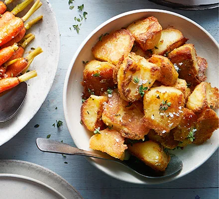

Roast Potatoes
Home

Make soggy potatoes a thing of the past with this clever recipe. You'll
end up with roasties that have a fluffy middle and golden, crisp exterior
This recipe takes 10 minutes of prep, and then 1 hour and 25 minutes for a
title of 1 hour and 35 minutes. It can serve 6-8 people.
Ingredints
- 4 tbsp rapeseed oil
- 1½ kg Maris Piper potatoes , cut into quarters, peelings reserved
- 50g butter
- ½ bunch of lemon thyme
- 6 garlic cloves , lightly bashed
- 1 tbsp sea salt
Method
Heat the oven to 220C/200C fan/gas 8. Add the oil to a large flameproof
baking tray and put in the oven for the oil to heat up.
Bring a large pan of salted water to the boil, tip in the potatoes and the
peelings (to impart extra flavour) and simmer for 8-10 mins. Drain the
potatoes and discard the peelings. Leave to steam-dry for 15 mins, then
return the potatoes to the pan, put the lid on and gently shake to lightly
rough up the edges.
Remove the tray from the oven and put directly on your hob over a medium
heat. Add the butter to the hot oil and, using tongs, add the potatoes to
the tray, one by one, carefully turning them in the fat, and leaving a
little space between them. Reduce the oven to 200C/180C fan/gas 6. Nestle
the lemon thyme in amongst the potatoes, along with the garlic. Sprinkle
over the sea salt and return to the oven to roast for 1 hr, turning every
once in a while, until golden and crisp.